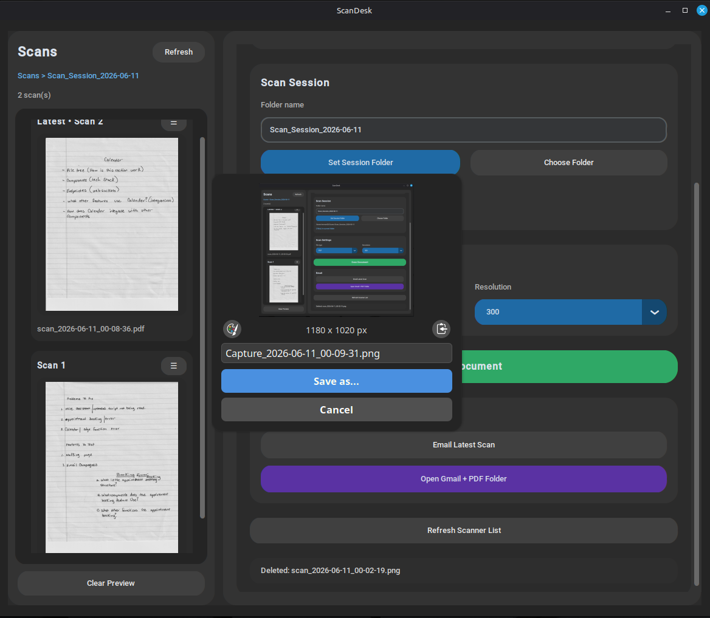
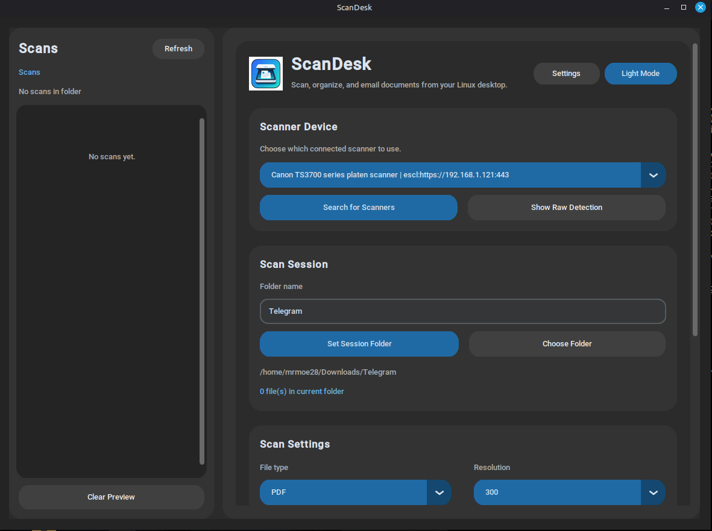
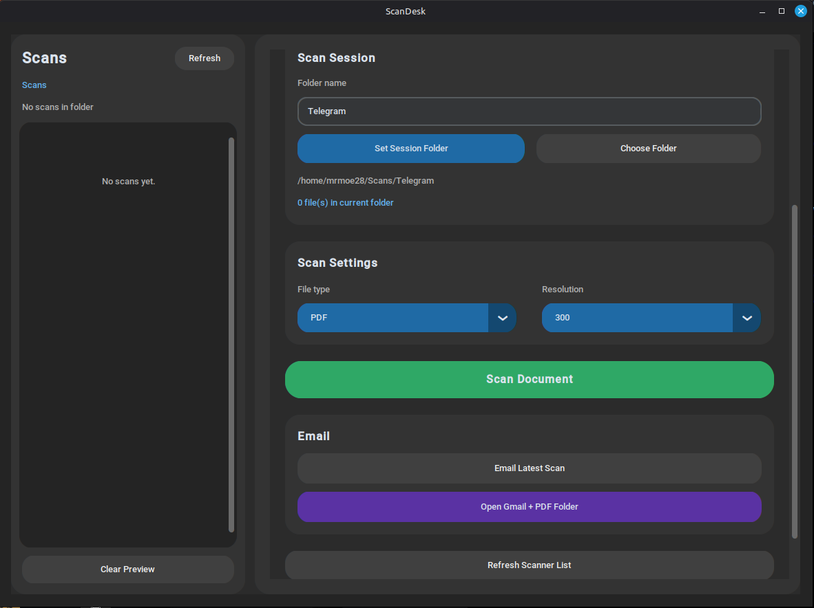

Now Available v1.0.0
The scanner app Linux was missing.
Plug in your scanner. Press one button. Get a perfect PDF. No drivers. No terminal. No frustration.

Plug in your scanner. Press one button. Get a perfect PDF. No drivers. No terminal. No frustration.
Auto-detects any SANE scanner. Canon, Epson, HP, Brother — plug in and press Scan. Done.
Export exactly how you need it. 150, 300, or 600 DPI. Single page or multi-page PDF.
Thumbnails update as you scan. Organize by session folder. Never lose a page again.
Open Gmail with your scans attached in one click. No exporting, no dragging, no hunting.
Every scan goes into a dated folder automatically. Organized by default. Searchable forever.
Matches your system theme. Your preference persists. Looks good on every desktop.

Dark mode — matches your system. Clean scan controls, session folders, email ready.

Light mode — same features, bright and readable.

Live thumbnail sidebar — see every scan as you make it.
Checkout by Square. Instant download.